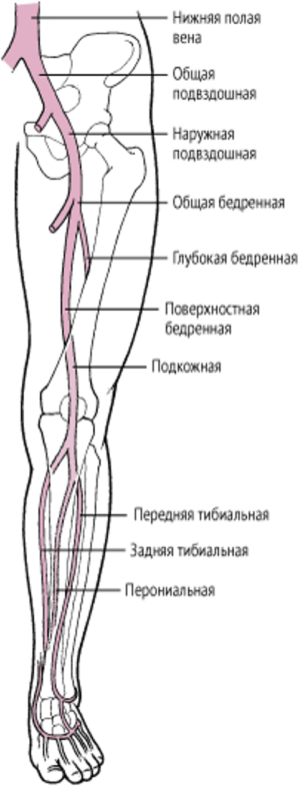
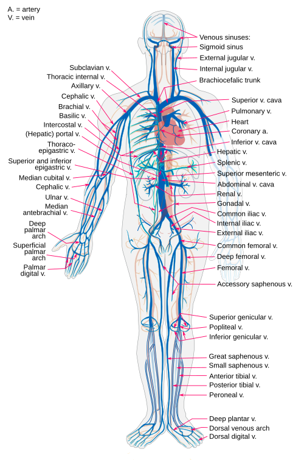

Что такое вены?
Вены — это кровеносные сосуды, по которым кровь возвращается от органов и тканей обратно к сердцу. Они являются неотъемлемой частью кровеносной системы человека и выполняют важную функцию поддержания циркуляции крови.
В отличие от артерий, вены имеют более тонкие стенки и меньшую эластичность. Это связано с тем, что венозная кровь течет под более низким давлением. Тем не менее, их структура позволяет эффективно транспортировать кровь, особенно благодаря наличию специальных клапанов.
Клапаны в венах предотвращают обратный ток крови и способствуют её движению вверх, особенно в нижних конечностях. Нарушение работы этих клапанов может привести к варикозной болезни — распространённой патологии среди взрослого населения.
Вены делятся на поверхностные, глубокие и перфорантные. Поверхностные вены расположены ближе к коже и часто видны невооружённым глазом. Глубокие вены находятся между мышцами и сопровождают артерии. Перфорантные соединяют две эти системы между собой.
Наибольшими венами в организме являются верхняя и нижняя полые вены. Они собирают кровь со всего тела и впадают в правое предсердие сердца. Отсюда венозная кровь поступает в лёгкие, где происходит газообмен — углекислый газ удаляется, а кровь насыщается кислородом.
Цвет вен на теле кажется синим из-за преломления света в коже, хотя на самом деле венозная кровь тёмно-красная. Именно оптический эффект делает вены визуально синими или голубыми.
Функция вен не ограничивается только транспортом крови. Они также участвуют в терморегуляции и в резервном накоплении крови. Около 70% всей крови организма может находиться в венозной системе в состоянии покоя.
Некоторые вены, например яремная вена на шее, важны для медицинских процедур. Через них проводят катетеризацию, ввод лекарств или забор крови. Эти вены хорошо видны и доступны для вмешательства.
Наиболее известное венозное заболевание — варикоз. Оно возникает, когда клапаны перестают справляться со своей задачей, и кровь застаивается. Это приводит к расширению вен, боли, отёкам и образованию тромбов.
Тромбофлебит — другое серьёзное заболевание вен, связанное с воспалением и образованием тромба. Он может возникать в результате длительной неподвижности, травм или после операций.
Глубокий венозный тромбоз (ГВТ) особенно опасен, поскольку тромб может оторваться и попасть в лёгочную артерию, вызвав тромбоэмболию лёгочной артерии — смертельно опасное состояние.
Для профилактики венозных заболеваний важно соблюдать активный образ жизни, избегать длительного сидения или стояния, использовать компрессионное белье и при необходимости — медикаментозную терапию по назначению врача.
Вены также играют роль в системе лимфообращения. Через мелкие венозные сосуды осуществляется обмен жидкостей между кровеносной и лимфатической системами.
Интересный факт: венозная кровь содержит больше углекислого газа, и именно она участвует в выведении этого газа из организма через лёгкие при выдохе. Таким образом, вены играют ключевую роль в дыхательной функции организма.
В ходе эволюции венозная система у человека приобрела сложную и разветвлённую структуру, способную обеспечивать надёжную циркуляцию даже в условиях вертикального положения тела и силы тяжести.